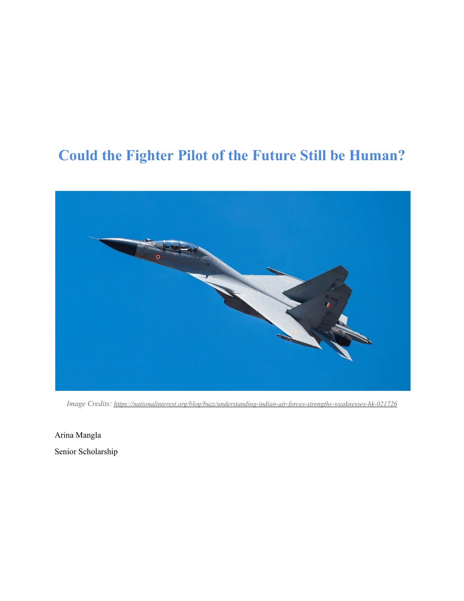
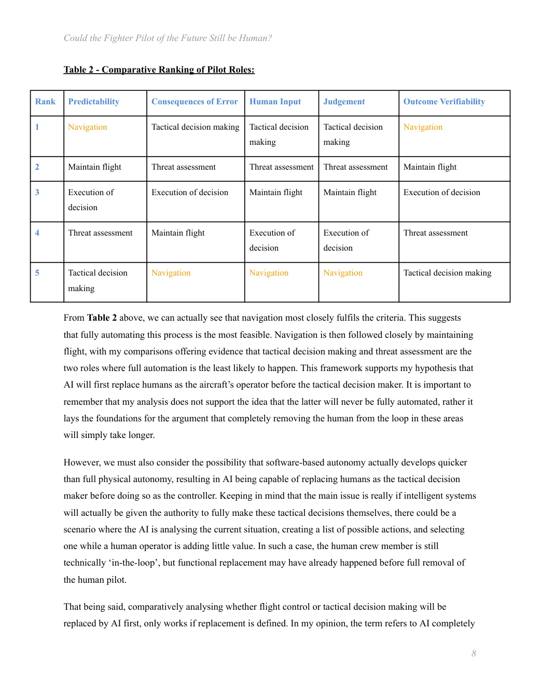

Could the Fighter Pilot of the Future Still Be Human?
An independent research paper examining how artificial intelligence could change the responsibilities of a fighter pilot, and which roles may be automated first.


The full paper includes background research, an analytical framework, the evaluation and bibliography.
AI as pilot, or AI as decision-maker?
The research distinguishes between controlling an aircraft and exercising tactical authority. I explored emerging autonomy while considering how reliability, oversight and human judgement change across different tasks.
Comparing the functions of a pilot.
I constructed a qualitative matrix assessing five functions against five criteria: predictability, consequences of error, human input, judgement and outcome verifiability. My analysis suggested that navigation and maintaining flight are more amenable to automation than threat assessment and tactical decision-making.
I also considered the limitations of a self-designed matrix: criteria selection, subjective scoring, and the consequences of weighting each dimension equally.
A gradual shift in responsibility.
The paper argues that AI could assume flight-control functions sooner than the most judgement-intensive decisions. Rather than viewing pilot replacement as an all-or-nothing event, it proposes a gradual transfer of individual responsibilities.